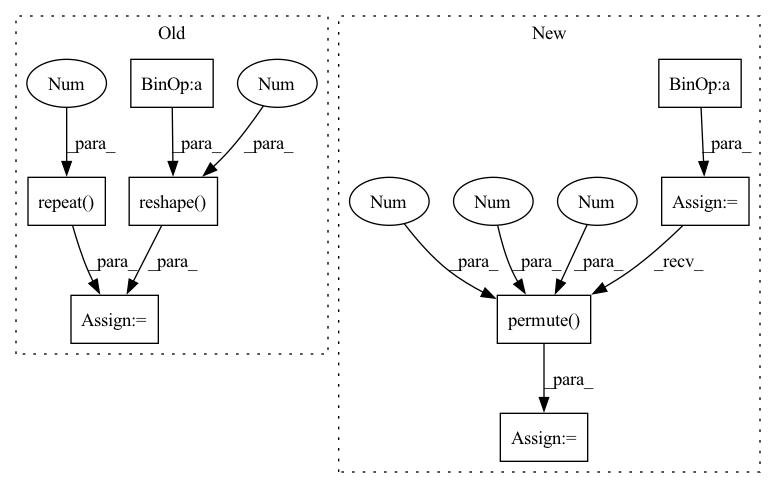

Pattern ID :10751

Before Change
// calculate output (height)
kernel_h = self.kernels.repeat(c, 1).view(-1, 1, s, 1)
output = F.conv2d(input, kernel_h, stride=1, padding=0, groups=c)
output = output.reshape(
n, c, s, -1, w + 3).permute(0, 1, 3, 2, 4).reshape(n, c, -1, w + 3)
// calculate output (width)
kernel_w = self.kernels.repeat(c, 1).view(-1, 1, 1, s)
output = F.conv2d(output, kernel_w, stride=1, padding=0, groups=c)
output = output.reshape(
n, c, s, h * s, -1).permute(0, 1, 3, 4, 2).reshape(n, c, h * s, -1)
return output
After Change
f = self.scale_factor
// merge n&c
input = input.view(n*c, 1, h, w)
// pad input (left, right, top, bottom)
input = F.pad(input, (1, 2, 1, 2), mode="replicate")
// calculate output (vertical expansion)
kernel_h = self.kernels.view(f, 1, 4, 1)
output = F.conv2d(input, kernel_h, stride=1, padding=0)
output = output.permute(0, 2, 1, 3).reshape(n*c, 1, f*h, w + 3)
// calculate output (horizontal expansion)
kernel_w = self.kernels.view(f, 1, 1, 4)
output = F.conv2d(output, kernel_w, stride=1, padding=0)
output = output.permute(0, 2, 3, 1).reshape(n*c, 1, f*h, f*w)
// split n&c
output = output.view(n, c, f*h, f*w)
In pattern: SUPERPATTERN
Frequency: 3
Non-data size: 8
Instances
Fragment ID: 37025204
Project Name: skycrapers/tecogan-pytorch
Commit Name: d03cb2d224ef11505f855a0d36fa35a877ef4ec8
Time: 2021-03-24
Author: dengjn@zju.edu.cn
File Name: codes/utils/net_utils.py
M Class Name: BicubicUpsample
N Class Name: BicubicUpsample
M Method Name: forward(2)
N Method Name: forward(2)
M Parent Class: nn.Module
N Parent Class: nn.Module
M File Name: codes/utils/net_utils.py
N File Name: codes/utils/net_utils.py
M Start Line: 138
M End Line: 153
N Start Line: 136
N End Line: 155
'>
Before Change
for i in range(T_out//self.time_slice):
y_hat = self.forward(node_features, edge_index, edge_features)
u_hat.append(y_hat)
node_features = torch.cat([y_hat, x.reshape(B*N, -1), t[:, (i+2)*self.time_slice-1:(i+2)*self.time_slice].repeat(N, 1)], dim=-1)
// inp = u_future[:,t*self.time_slice:(t+1)*self.time_slice]
// inp = y_hat
After Change
x = val_batch["x"].float().squeeze(-1)
B, _, N = u.shape
t = val_batch["t"].float() // B, T
dt = t[0][1] - t[0][0]
graph = self._build_graph(
u[:,:self.time_window,:],
t,
x,
steps=[0]*B)
target = u[:,self.time_window:,:]
T_out = target.shape[1]
u_hat = []
for i in range(T_out//self.time_window):
y_hat = self.forward(graph, x[0,-1], t[0,-1], dt)
y_hat = y_hat.reshape(B, N, -1).permute(0,2,1)
u_hat.append(y_hat)
graph = self._build_graph(
y_hat,
'>
Fragment ID: 37025190
Project Name: jaggbow/magnet
Commit Name: b9ec29a45c27a8d37c08fb091ec1cd92c00dee3b
Time: 2022-10-10
Author: oussama.boussif@student.ecp.fr
File Name: models/mpnn.py
M Class Name: MPNN
N Class Name: MPNN
M Method Name: validation_step(3)
N Method Name: validation_step(3)
M Parent Class: pl.LightningModule
N Parent Class: pl.LightningModule
M File Name: models/mpnn.py
N File Name: models/mpnn.py
M Start Line: 277
M End Line: 294
N Start Line: 300
N End Line: 325
'>
Before Change
inp = inp.reshape(B*N, -1)
else:
inp = y_hat
node_features = torch.cat([inp, x.reshape(B*N, -1), t[:, (i+2)*self.time_slice-1:(i+2)*self.time_slice].repeat(N, 1)], dim=-1)
u_hat = torch.cat(u_hat, dim=-1)
After Change
x = train_batch["x"].float().squeeze(-1)
B, _, N = u.shape
t = train_batch["t"].float() // B, T
dt = t[0][1] - t[0][0]
graph = self._build_graph(
u[:,:self.time_window,:],
t,
x,
steps=[0]*B)
target = u[:,self.time_window:,:]
T_out = target.shape[1]
u_hat = []
for i in range(T_out//self.time_window):
y_hat = self.forward(graph, x[0,-1], t[0,-1], dt)
y_hat = y_hat.reshape(B, N, -1).permute(0,2,1)
u_hat.append(y_hat)
if self.teacher_forcing:
graph = self._build_graph(
'>
Fragment ID: 37025201
Project Name: jaggbow/magnet
Commit Name: b9ec29a45c27a8d37c08fb091ec1cd92c00dee3b
Time: 2022-10-10
Author: oussama.boussif@student.ecp.fr
File Name: models/mpnn.py
M Class Name: MPNN
N Class Name: MPNN
M Method Name: training_step(3)
N Method Name: training_step(3)
M Parent Class: pl.LightningModule
N Parent Class: pl.LightningModule
M File Name: models/mpnn.py
N File Name: models/mpnn.py
M Start Line: 245
M End Line: 266
N Start Line: 255
N End Line: 287